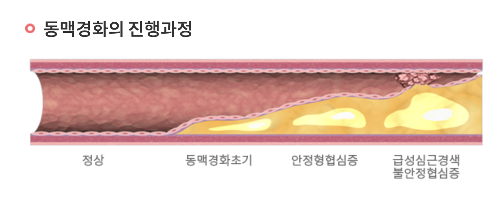
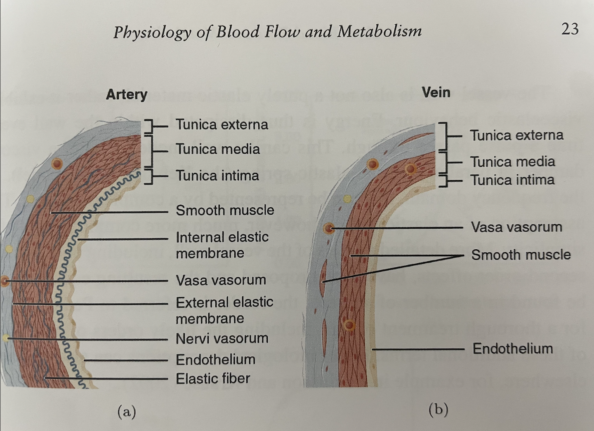
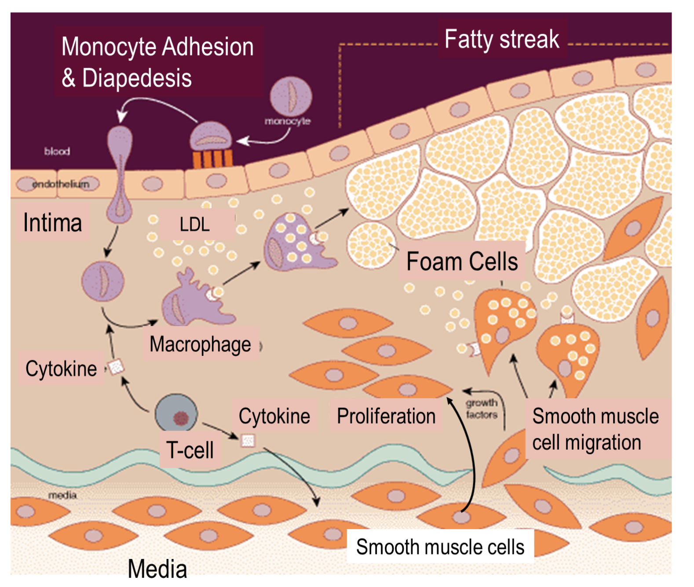
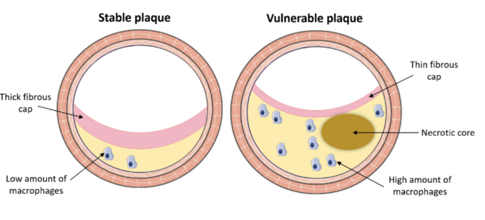

---
{
"layout": "note",
"title": "[Cardiovascular disease] 1. Plaque",
"journal": true,
"section": "Study",
"topic": "CardioVascular Diseases",
"excerpt": "지금까지는, 혈관에 대한 생리학 지식에 대해서 알아보았고,.,,, 이제 가장 흔한 혈관 질병인 혈관 벽이 지방과 콜레스테롤 덩어리로 좁아지는 Stenosis(협착) 에 대해서 알아봅십다. 위사진에 보이시는 Antherosclerosi",
"classes": "wide",
"permalink": "/blog/biomechanics/cardiovascular-diseases/cardiovascular-disease-plaque-formation/",
"study_area": "Mechanical",
"date": "2024-09-21",
"source_url": "https://jeffdissel.tistory.com/87",
"header": {
"teaser": "/blog/biomechanics/cardiovascular-diseases/cardiovascular-disease-plaque-formation/images/img-001.png"
}
}
---
{% raw %}지금까지는, 혈관에 대한 생리학 지식에 대해서 알아보았고,.,,,
이제 가장 흔한 혈관 질병인
혈관 벽이 지방과 콜레스테롤 덩어리로 좁아지는
Stenosis(협착)
에 대해서 알아봅십다.

위사진에 보이시는
Antherosclerosis(동맥경화)
는 협착이
동맥에
발생하는 경우입니다.
보이시는 것처럼, 노란색 물질(지방, 콜레스테롤)이
쌓이게 되고
이 쌓인 물질을 Plaque
라고 칭합니다.
TMI
제 연구 주제는 이러한 협착이 일어났을 때,
유체역학적으로 어떠한 혈액의 흐름이 이어나는가
를 분석할 예정입니다.
그렇다면, 들어가기 앞서서
어떤 과정으로 왜 와이 도대체 Stenosis가 발생할까?
에 대해서 이번 포스터에서 다루어 보겠습니다.
First,

지난 포스터에서 다루었다 싶이,
혈관벽은 총 3가지 (내막, 중막, 외막)
Tunica Intima, Media, Externa 로 이루어져 있습니다.
이제 밑의 사진의
위(자주색) - 혈액
내벽 - Endothelium
내막 - Intima
중간막 - Media
인 것을 위에서 부터 아래로 (-y) 방향으로 확인하시고
과정설명 들어가겠습니다.

1. Endothelium got damage from
-Physical stress
-Reactive oxygen (smoking, drinking, aging)
- Fatty or High cholestrol food digestion
-Lack of sleep or mental stress
위 4가지 요인으로(환경적, 라이프스타일)
내벽에 손상이 가면
협착과정이 시작됩니다
2. �Low Density Lipoprotenin(LDL) cholesterol infiltrate
손상된 내막 안으로
LDL 콜레스테롤 침투
그리고 Over time
ROS(reactive Oxygen Species)
매우 반응성이 높은 분자 - 활성화 산소
에 의해서
LDL -> oxLDL
산화 콜레스테롤로 변화한다.(이게 핵심)
ROS
는 인간의 호흡과정에서도 생성 되지만
환경적 요인
(수면부족, 스트레스, 흡연, 음주, 운동부족, 자외선 노출, 대기 오염)
으로도 많이 생성 된다는 것.
3. Monocytes invasion
내막의 손상->
Immune systme 작동->
Monocytes(one of the white blood cells)
가 내막으로 들어오게 됩니다.
이후,
Monocytes -> Macrophages(감염된 세포, 이물질 engulf 역할)
로 변화합니다.
이 과정 자체가 diapedsis process
즉, 면역 과정 중 하나입니다.
감염된 곳에 Monocytes가 들어가서,
겸염을 치료하는 녀석으로 바뀌는 거죠.
4. Macrophages digest oxLDL
그리고, Macrophages들은 oxLDL를 이물질이라고 인식하고
먹방에 들어갑니다.
먹방의 잔여물이 바로
Foam Cells
plaque의 씨앗이라고 생각하시면 됩니다.
그리고 이들이 쌓이게 되면
-> 그림에서 Fatty Streaks 들이 형성됩니다. 바로 플레그죠.
5. Inflammatory Signals (Cytokines)
염증이 발생(LDL 침투, 2번 과정) 이후
부터 사실상
염증신호
라는 것이 발산 됩니다.
염증 신호 중에서 Cytokines는 면역 Cell 중 하나인
T - cell 을 attract 합니다.
Th1 T-cell -> procipitate inflammation(촉진)
Th2 T-cell -> restrain inflammation(억제)
그런데 여기서, ROS(reactive oxygen species)
가 많이 존재하는 상황에서는
Th1 T-cells are dominant
-> inflammation accelerates.
따라서, 생활패턴, 생활 환경들이 플레그 초기 상황에서
바꿔지게 되면,
Th1 T-cell 억제, Th2 T-cell 촉진으로
염증이 가라앉고, 플레그의 성장이 멈춰지게 됩니다.
여기서 환경적 요인이 계속해서 좋지 않아
(흡연, 수면부족, 음주, 스트레스, 잘못된 식습관)
계속해서 ROS -> Th1 T-cell -> cytokines
-> Monocytes more invade
-> Macrophages more generate from Monocytes
-> More foam cells are cascade.
이렇게 악 순환의 반복으로 점점점점
Fatty streaks 는 계속해서 쌓이게 됩니다.
6. Smooth Muscle Cells(SMC) produce Collagen
여기서, 아주 가장 중요한 핵심적인
역할을 하는 것은 바로. (SMC)입니다.
그림을 보시면,
염증작용으로
Cytokine 신호를 받게 되면,
혈관
중막-> 내막
근육세포가 이동 하는 것을 볼 수 있습니다.
그리고, 아주 중요한 (Extracellular Matrix, ECM)을 분비합니다.
(such as, Collagen , Elastin)
이렇게 분비된 물질들이 바로 Fibrous Cap을 구성하지요.

위 사진을 보시면, Fatty streaks 들이 쌓여있고,
그 위를 Fibrous Cap이 덮고 있습니다.
콜라겐 , elastin 으로 구성되어있는 이 섬유막이
두꺼우면 -> 잘 터지지 않아서, 안정적인 플레그
얇으면 -> 터질 위험이 큼 -> 터지게 되면
-> 혈소판(Platelets) clusters
-> Thrombus(a blood clot) 혈전 생성
-> Vessel Occulusion(혈관 막음)
따라서, 섬유막의 두께가 아주 굉장히 중요하며,
이를 결정하는 것은 (SMC)가 얼마나 많은
콜라겐과 엘라스틴을 분비하냐에 달려 있습니다.
SMC prolifeartion 이 언제 그렇다면 촉진될까?
- Inflammatoy cytokines singal
- Growth Factor like Platelet-Derived Growth Factor(PDGF)
-TGF- beta
- �Hardening, Calcification(동맥경화증 후기단계)
시간이 흐르면서, 내막의 세포들이 손상되거나 죽게 되면
-> 잔해들로 인해 칼슘이 축적됩니다.
지속적인 염증
-> 콜라겐 분비 + 칼슘축적
SMC
-> 섬유화 진행(콜라겐 엘라스틴 촉진)
섬유화 과정 속에 칼슘축적 유도 신호 발산 포함.
여기까지가, 플라크가 생성되는 과정과
플라크에서 가장 중요한 섬유막 두께에 관한 정리였습니다.
{% endraw %}